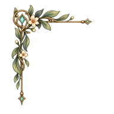
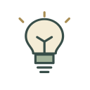

루미아 공통 UI 재사용 검수
기존 아이콘·양피지·모서리로 구성한 시험 화면입니다. 게임 화면 승인본은 아닙니다.
창보다 큰 시험 폭은 현재 창에 맞춰 제한됩니다. 키보드 Tab으로 포커스를 확인할 수 있습니다.

아이콘 표시 크기
왼쪽 32px / 오른쪽 48px. 원본 SVG는 128×128입니다.
가방
발견 기록
힌트

기본·선택·비활성 상태
긴 문구와 선택지
아직 친구의 마음을 모두 알지는 못하지만, 무엇 때문에 속상했는지 천천히 이야기를 들어보고 싶어.
문구는 줄바꿈 검수용 예시이며 확정 대본이 아닙니다.